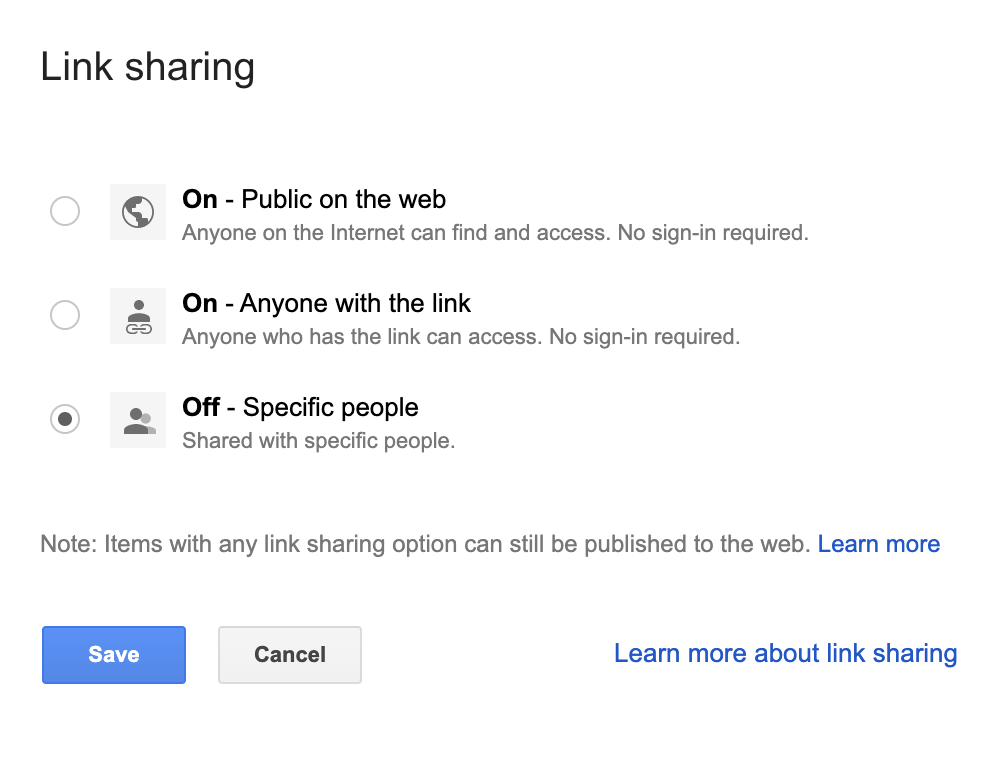

Git into It:
Harnessing the World’s Most Popular Open-Source Software Platform for Education
Noah Koubenec
https://koubenecn.github.io/aect-2019-slides/
So what is Git?
Git allows files to be edited and copied in a controlled way
Git is community-developed and open source
Git is distributed
Git is version control
What about GitHub?
GitHub is a cloud-based service providing hosting for repositories and a web interface for Git.
Alternatives include:
Sharing and Editing: Google Docs vs. Git & GitHub

Sharing and Editing: Google Docs vs. Git & GitHub
Git: Key Terms
- Repository (repo)
- Branch
- Fork
- Fetch
- Merge
- Pull request
- Clone
- Cherry pick
So why doesn't everyone use Git?
Potential Uses
OER textbooks
3D files
Data sets
Course syllabi
Collaborative poetry
The Constitution
1st-10th Amendments
13th Amendment
15th Amendment
19th Amendment
1791
The Bill of Rights
- Paste your amendments at the end of your local copy and save - just like the Founders!
- Go to GitHub Desktop, enter a summary in the commit box, and click "commit to master"
- On the menu bar, click "branch > create pull request"
1865
The Thirteenth Amendment
- Paste your amendment at the end of your local copy and save - just like the Founders!
- Go to GitHub Desktop, enter a summary in the commit box, and click "commit to master"
- On the menu bar, click "branch > create pull request"
1868
Womens' Suffrage Amendment
- Paste your amendment at the end of your local copy and save - just like the Founders!
- Go to GitHub Desktop, enter a summary in the commit box, and click "commit to master"
- On the menu bar, click "branch > create pull request"
1920
The Nineteenth Amendment
- Paste your amendment at the end of your local copy and save - just like the Founders!
- Go to GitHub Desktop, enter a summary in the commit box, and click "commit to master"
- On the menu bar, click "branch > create pull request"
About this presentation
?